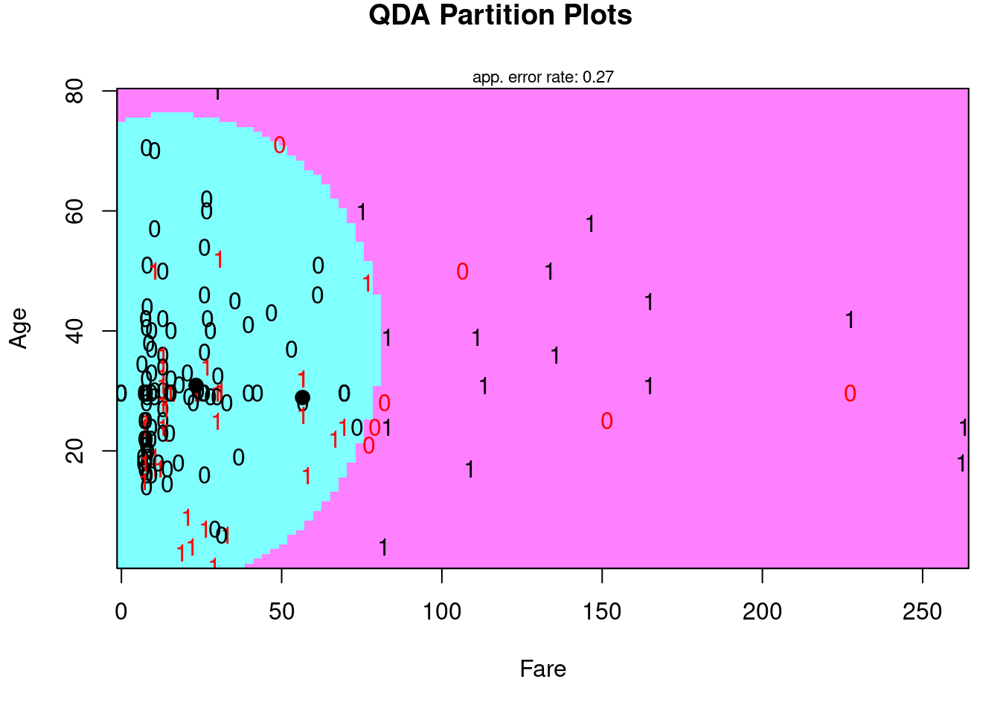
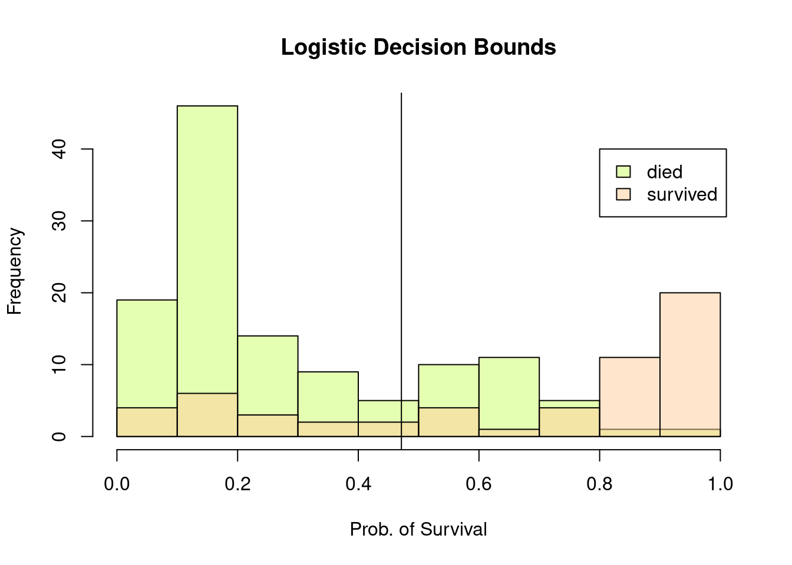
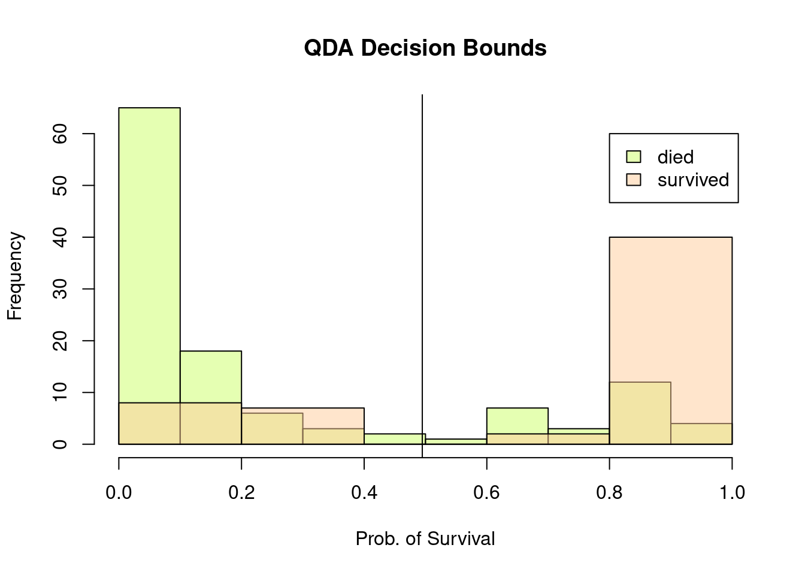
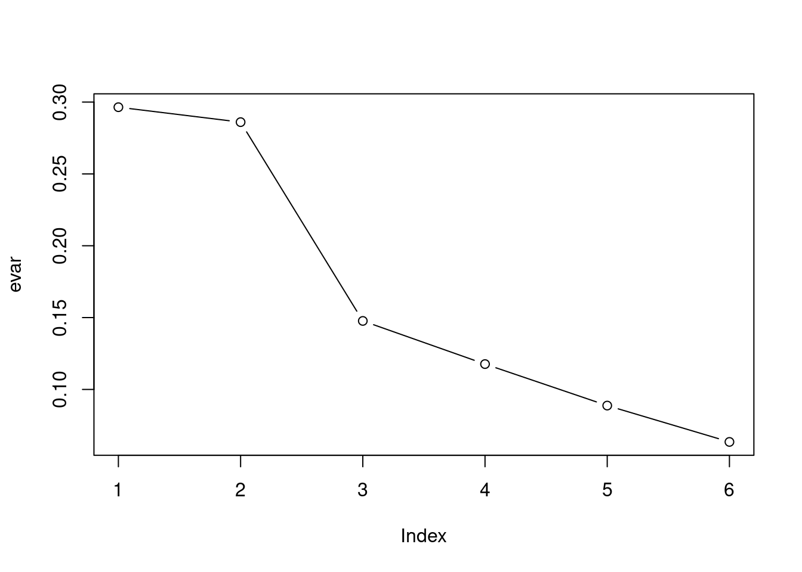

Linear Discriminant Analysis (LDA) or Quadratic Discriminant Analysis (QDA)
let’s fit a QDA
# training on the QDAfitQda <- (train(method ="qda", Survived ~ ., data = Xtrain))# accuracyXtest <- Xtest %>%mutate(qdayhat =predict(fitQda, newdata =., type ="raw"))confusionMatrix(Xtest$logityhat,Xtest$Survived)$overall["Accuracy"]
the QDA accuracy is better than that of the Logistic. Although this is strange as QDA assumes normality in the predictors and I didn’t check for that.
library(klaR)partimat(formula = Survived ~ Age + Fare,data=Xtest,method="qda",main="QDA Partition Plots")

#decision bounds for logistic regressionlogitPr =predict(fitLogit, newdata =Xtest, type ="prob")hist(logitPr[Xtest$Survived ==0,2], col =rgb(.8,1 ,.4,alpha = .5),main ="Logistic Decision Bounds", xlab ="Prob. of Survival")hist(logitPr[Xtest$Survived ==1,2], col =rgb(1,.8,.6,alpha = .5),add =1)v =mean(logitPr[Xtest$Survived ==0,2])+mean(logitPr[Xtest$Survived ==1,2])abline(v=v/2)legend(0.8,40, legend =c("died","survived"), fill =c(rgb(.8,1 ,.4,.5), rgb(1,.8,.6,.5)))

#decision bounds for QDA qdaPr =predict(fitQda, newdata =Xtest, type ="prob")hist(qdaPr[Xtest$Survived ==0,2], col =rgb(.8,1 ,.4,alpha = .5),main ="QDA Decision Bounds", xlab ="Prob. of Survival")hist(qdaPr[Xtest$Survived ==1,2], col =rgb(1,.8,.6,alpha = .5),add =1)v =mean(qdaPr[Xtest$Survived ==0,2])+mean(qdaPr[Xtest$Survived ==1,2])abline(v=v/2)legend(0.8,60, legend =c("died","survived"), fill =c(rgb(.8,1 ,.4,.5), rgb(1,.8,.6,.5)))

Comparing the two decision bounds, QDA does seem to be more accurate and definite than does the Logistic Regression. This does reflect the accuracy score of the two models.
Naive Bayes
fitNb <-train(method ="naive_bayes", Survived ~ . , data = Xtrain)Xtest <- Xtest %>%mutate(nbyhat =predict(fitNb, newdata =., type ="raw"))confusionMatrix(Xtest$nbyhat,Xtest$Survived) -> cm.nbcm.nb$overall["Accuracy"]
Accuracy
0.747191
Naive Bayes has a similar accuracy to logistic regression. Let’s see if certain variables improve it’s performance metrics.
pca <-prcomp(Xtrain[,2:7], scale. = T)evar = pca$sdev^2/sum(pca$sdev^2)plot(evar, type ='b')

looks like 3 components are relevant for our analysis, maybe we can see which ones
pca$rotation[, 1:3]
PC1 PC2 PC3
Pclass -0.2881179 -0.60622454 -0.07153728
Sex -0.3923492 -0.02697763 0.88199087
Age -0.1544670 0.53855145 0.09766212
Fare 0.4883438 0.39447871 0.22518505
SibSp 0.4585138 -0.35557015 0.38240226
Parch 0.5389579 -0.24430058 0.10245408
rotation tells me that Fare is important in three components as it places in all three, so it must be important. SibSp places in two components, while Sex seems to be very influential in component three, so I will choose it.
fitNb2 <-train(method ="naive_bayes", Survived ~ Fare + SibSp + Sex , data = Xtrain)Xtest <- Xtest %>%mutate(nb2yhat =predict(fitNb2, newdata =., type ="raw"))confusionMatrix(Xtest$nb2yhat,Xtest$Survived) -> cm.nb2table1(cm.nb2$table,"Naive Bayes with less variables")
[1] "Naive Bayes with less variables || Accuracy: 0.758427 | Precision: 0.666667 | Recall(TPR): 0.612903 | F1: 0.638655"
slight improvement in accuracy and TNR, making it relatively better than all other models so far. Let’s see if all other models improve after this variables reduction.
# log regressionfitLogit <-train(Survived ~ Fare + SibSp + Sex ,data= Xtrain,method ="glm",family ="binomial") Xtest$logityhat <-predict(fitLogit, newdata =Xtest, type ="raw")confusionMatrix(Xtest$logityhat,Xtest$Survived)$table -> cm.log # QDA fitQda <- (train(method ="qda", Survived ~ Fare + SibSp + Sex , data = Xtrain))Xtest$nbyhat <-predict(fitQda, newdata =Xtest, type ="raw")confusionMatrix(Xtest$nbyhat,Xtest$Survived)$table -> cm.qda2# performance metricstable1(cm.log,"Logistic Regression with less variables",T)
Only using the three variables, Naive Bayes and Logistic Regression improved, however QDA seems to have taken a dive in performance considering the previous accuracy score was around .76.
Model Comparison
# performance metricstable1(cm.log,"Logistic Regression with less variables",T)
QDA dominates in all of these performance metrics, including accuracy. It also has the highest true positive and and true negative rate; it is the best model for predicting who survived as well as who did not.
Conclusion
Quadratic Discriminant Analysis with all the 6 variables is the model that has the most reliable results. If we are predicting who survived the Titanic, given these 6 particular variables from the data, then this the model I would move forward with.